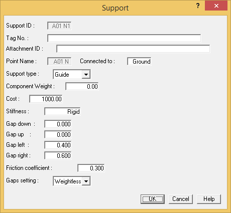
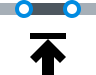
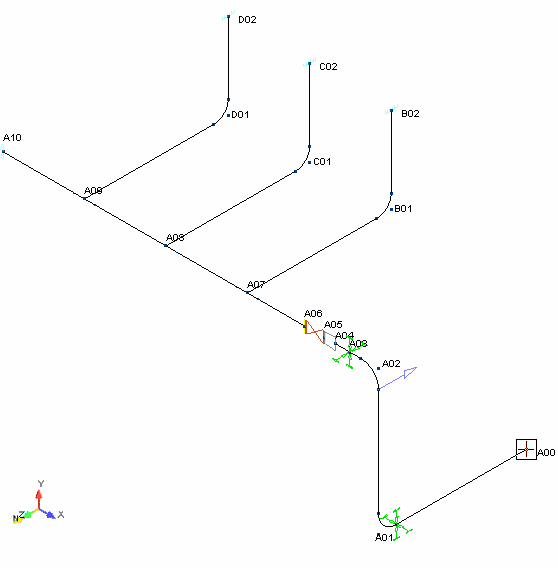
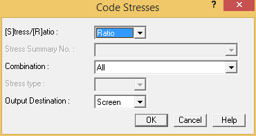
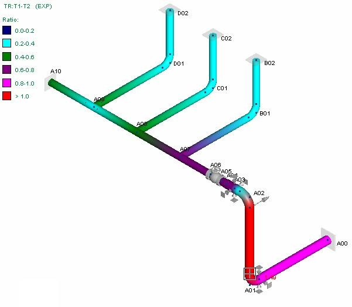
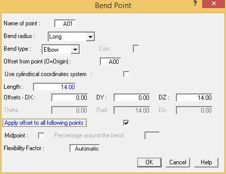
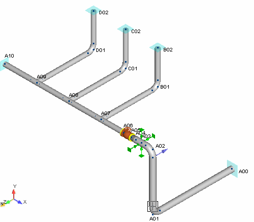

Design Change
Having already reviewed stresses, deflections, and loads, we will now iterate through a design change. AutoPIPE facilitates this process by helping you to quickly re-run an analysis to determine whether a design change produced the desired effect.
1. Pick point A01 N.
  2. Select Insert > Supports > Support.
- Select Guide from the Support type field.
- Press OK to accept the defaults and close the dialog. The Guide is placed in the model as shown in the following figure.
A guide is placed at bend near point A01 N.
-
.jpg) Select View > Mode
> Solid Model View to display a 3D representation of
the model.
Select View > Mode
> Solid Model View to display a 3D representation of
the model. -
.jpg) After adding the new component,
you have to re-run the static analysis; otherwise, the results
(based on the addition of the guide support) will not reflect the
properties of the design change. Select Analysis >
Analyze > Static.
After adding the new component,
you have to re-run the static analysis; otherwise, the results
(based on the addition of the guide support) will not reflect the
properties of the design change. Select Analysis >
Analyze > Static.
| Hint: |
As mentioned previously, the Static Analysis runs a static analysis using the last set of options defined in the dialog. Use the command when re-running an analysis. |
- Select Result > Interactive > Code Stresses to check the piping code stress results.

- Press OK to accept the defaults and review the stress ratios. A color-coded stress plot of the model is displayed. Note that the red areas help you to quickly determine where the system is still overstressed.
The red areas in the display help to quickly locate areas of high stress.
- Press Cancel to exit interactive stress review.
- The Guide support did not solve the stress problem. "Undo" the design change by selecting
Home > Clipboard > Undo. The Guide is removed from the model.
- You will now try another design change in which we add length to the first elbow in order to add flexibility. Pick point A01 to make it active.
- Select Modify > Piping Components > Bend, or double-click on point A01.

- In the Length field, enter 14 feet {4000} mm.
- Enable the Apply offsets to all following points field. Note that the DZ value is updated.
- Press OK to close the dialog. The model is redrawn as shown in the following figure.
The length of this run was extended.
- Let's see if the new design change helps to alleviate the points of high stress in the system. Select
Analysis > Analyze > Static to re-analyze the system.